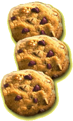

|
| Alex's mom loves baking cookies and suggested that you and your family might enjoy these after lunch one day! |
 |
Ingredients
For 32 cookies, you will need:
 |
1 2/3 cups self-rising flour |
 |
a pinch of salt |
 |
1 teaspoon rolled oats |
|
2
1/3 cups of rolled oats |
|
1
cup plus 2 tablespoons sweet butter, at room temperature |
|
1
cup superfine or granulated sugar |
|
1/2 teaspoon real vanilla extract |
|
1/3 cup of raisins, dried sour cherries or dried cranberries |
|
Several
baking trays, greased |
|
 |
Method
What to do:
|
Mix
the flour with the salt, baking powder and oats. |
|
Using
a wooden spoon or electric mixer, cream the butter, sugar and vanilla
until fluffy. |
|
Using
your hands or a wooden spoon, gradually work in the flour mixture
and dried fruit, then knead the mixture until it comes together. |
|
Roll
it into balls about 1 inch across. Place the balls well apart on
the baking trays, then flatten them slightly with your fingers. |
|
Cook
in a preheated oven at 350F for about 10 to 12 minutes or until
golden. |
|
Cool
on the baking tray for a couple of minutes until firm enough to
transfer to a wire tack. Let cool completely, then store in an airtight
container. |
Alex
says:
| Why not ask for these cookies as a yummy snack in your lunch box? |
 |

|